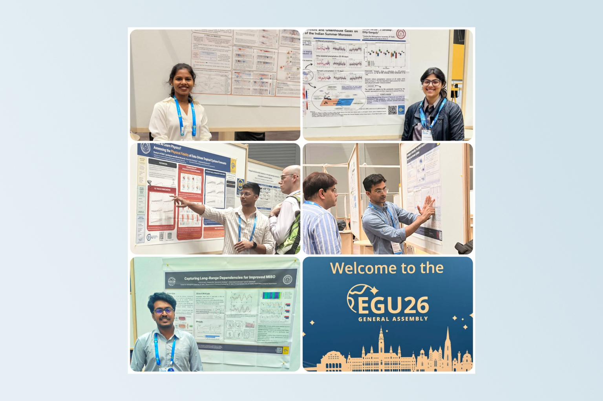
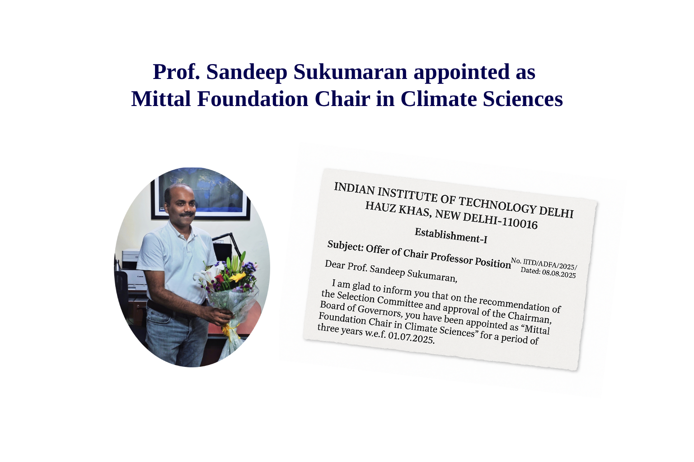
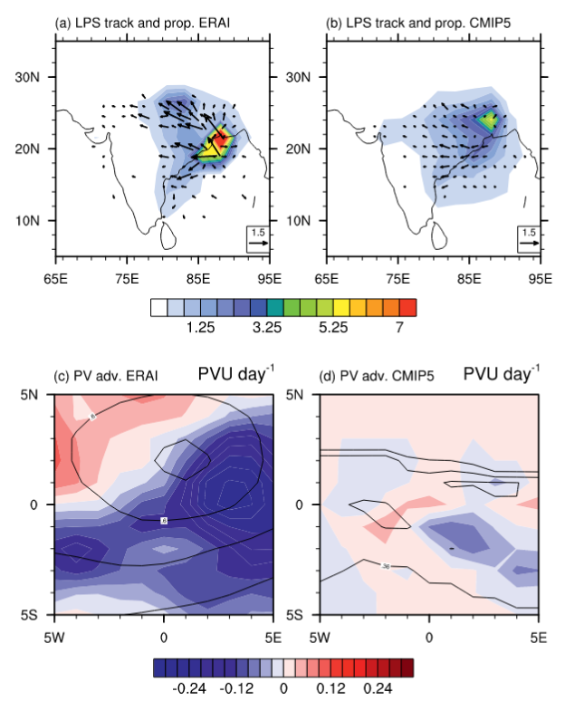
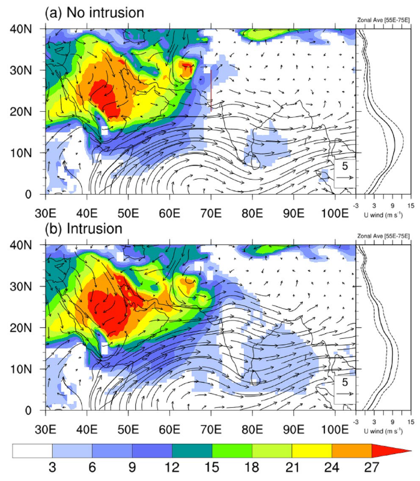
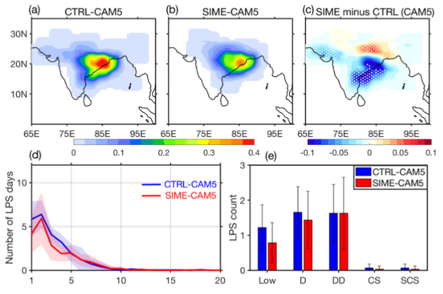
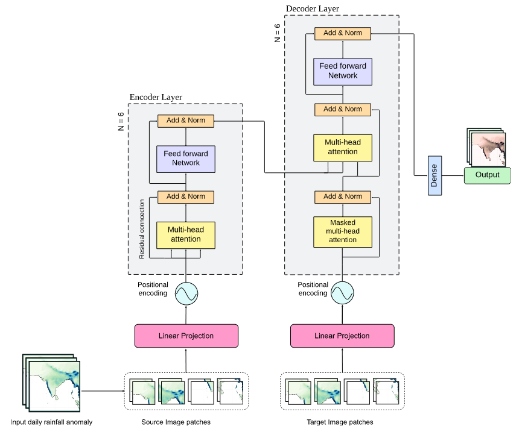

Monsoon Dynamics
Investigating the fundamental physical mechanics governing the Indian summer monsoon, mapping intraseasonal precipitation oscillations, structural monsoon breaks, and teleconnection circulation patterns.
At the Climate Dynamics Lab, we study the dynamics of the Earth’s climate system, with a particular focus on the Indian summer monsoon, which shapes millions of lives across South Asia. Led by Prof. Sandeep Sukumaran at the Centre for Atmospheric Sciences, IIT Delhi, our research integrates observations, climate models, and machine learning to investigate the ISM, low-pressure systems, dry air intrusions, and the physical processes and energetics driving changes across scales. By combining physics-based understanding with data-driven approaches, we aim to improve forecasts, detect extreme events, and develop tools that support disaster preparedness and climate resilience. Our work seeks to unravel the mechanisms behind monsoon behavior and broader climate patterns, providing insights into both regional and global climate systems in a changing planet.
We are inviting applications from motivated PhD aspirants with a valid CSIR/UGC Fellowship to join our research group. If you're passionate about atmospheric science and want to tackle real-world environmental challenges, get in touch with us or explore our active timelines.

Prof. Sandeep is an atmospheric scientist specializing in climate dynamics. He earned his PhD from IIT Kharagpur and conducted deep-field advanced atmospheric postdoctoral research positions at IISc Bangalore, University of Oslo, and NYU Abu Dhabi.
The Climate Dynamics Lab at IIT Delhi is dedicated to unraveling the complex mechanisms governing the Indian monsoon system and its response to climate change.[cite: 9] We employ an agile, multidisciplinary approach combining high-resolution numerical climate modeling, satellite observational analysis frameworks, and deep physics-guided neural computing architectures to address core unknowns about climate resilience across South Asia.
Explore Our ResearchKey investigative focus areas within our research frameworks
Investigating the fundamental physical mechanics governing the Indian summer monsoon, mapping intraseasonal precipitation oscillations, structural monsoon breaks, and teleconnection circulation patterns.
Quantifying global thermal atmospheric acceleration impacts on regional monsoon signatures and downscaling global coupled projections to calibrate local extreme weather anomalies.
Engineering specialized data-driven deep networks for weather event prediction, structural climate model emulation wrappers, and localized deep extreme event classification.

Research scholars from the Climate Dynamics Lab represented the Centre for Atmospheric Sciences (CAS) at the prestigious EGU General Assembly 2026, Vienna, Austria.

Prof. Sandeep Sukumaran has been selected as the prestigious Mittal Foundation Chair in Climate Sciences at IIT Delhi.

Investigating convective trigger boundaries and the internal lifecycle mechanics of depression formations across the Bay of Bengal.

Dissecting how mid-latitude mid-tropospheric dry air vectors break monsoon equilibrium regimes and alter seasonal precipitation metrics.

Simulating and assessing century-scale system shifts in tropical monsoon metrics using high-order CMIP6 simulation tracks.

Developing data-driven predictive networks to improve baseline simulation skills across key sub-seasonal forecast milestones.